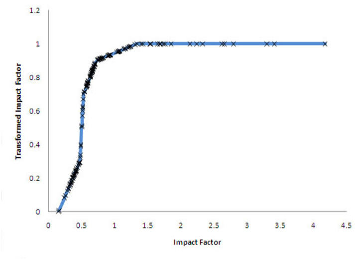
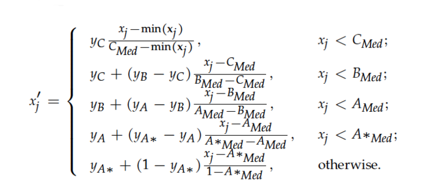
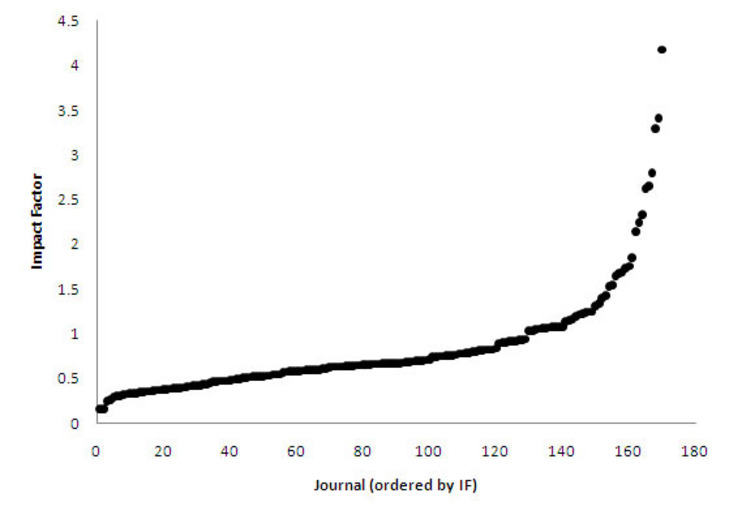
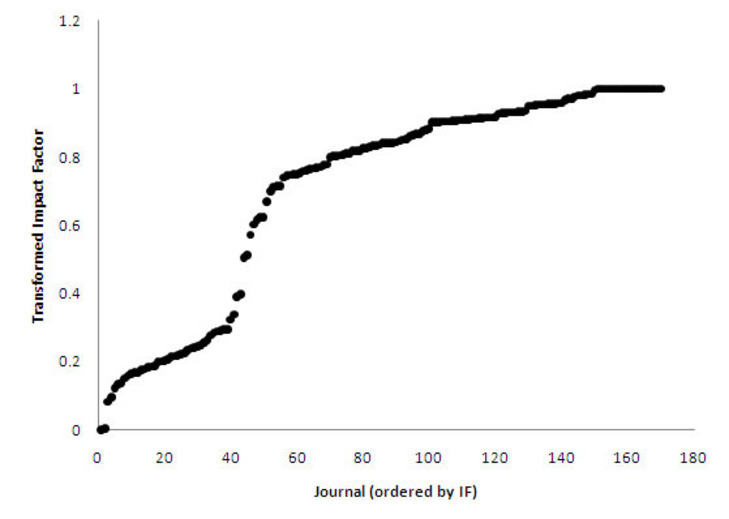

Data can be surprising and at times present you with unexpected deviations from what we might consider normal.
Here you will learn about what happens if your data is a little less predictable and parts of it can be transformed one way, but others should be transformed a different way? Rest assured, we can certainly do just that!
Data that is less predictable
The following points address how you can work with data that is less predictable:

Piecewise transformation 1

Piecewise transformation 1

Before piecewise transformation

After piecewise transformation
Be careful if converting ordinal (or non-numeric) data to numeric data!
- For example, it is common to take Likert scale type questions “strongly disagree, disagree, agree, strongly agree”, etc, and give each of these a numeric value.
- It can be very dangerous to draw inferences from such data, because people don’t usually think on a linear scale. The real difference between disagree and neutral could be very different to the difference between neutral and agree or agree and strongly agree. Furthermore, people often don’t think on the same scale.
- If you’re going to transform such data for purposes of aggregation or regression, make sure you treat the results with this kind of thing in mind.
Activity
If you are experiencing any difficulties with the programming functions presented in the content above, share your thoughts in the discussion forum.